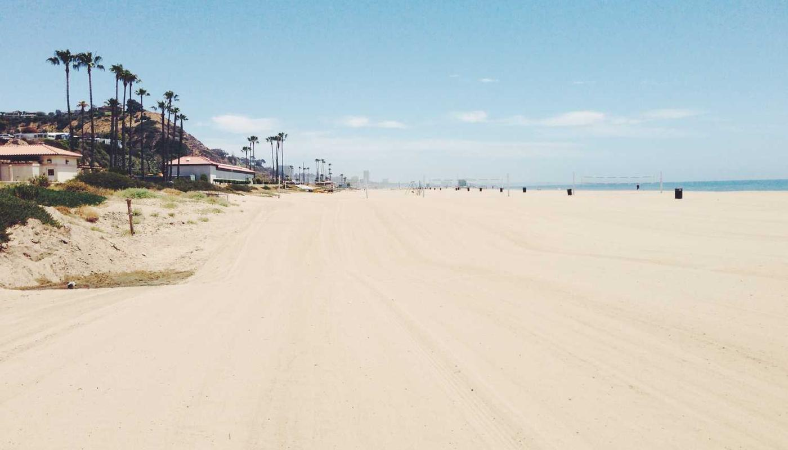

Añadir una inspiración
Últimas Inspiraciones

Título de la Inspiración 1
Fecha: 01/01/2025
Resumen de la inspiración 1.
Título de la Inspiración 2
Fecha: 02/01/2025
Resumen de la inspiración 2.
Título de la Inspiración 3
Fecha: 02/01/2025
Resumen de la inspiración 3.
Título de la Inspiración 4
Fecha: 03/01/2025
Resumen de la inspiración 4.